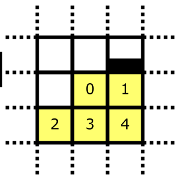

Self collision tries to keep the cloth from self intersecting. It does this by keeping the particles a minimum distance away from each other. This distance can be set using Cloth::setSelfCollisionDistance().
Testing every particle against all other particle is too slow. Instead an acceleration structure is used to only test nearby particles.
The acceleration structure is a combination of a regular grid and a sweep. The longest axes of the AABB around all particles is used for the sweep. The other two axes are divided in a regular grid of 253x253. For each particle we test against the current and neighboring cells of the grid in which we sweep along the remaining axis. The whole process will be described in more detail below.
The AABB is obtained from ClothData (calculated by SwCollision<T4f>::computeBounds()). The edge lengths are calculated by subtracting the lower bounds from the upper bounds. The sweep axis index (0 to 2 for x to z so we can use the array operators) is picked by the largest edge length. The two hash axes are the remaining axes in arbitrary order.
The cell size for the hash axes is picked so that it is not smaller than the collision distance set by the user, and large enough that 253 cells cover the whole edge length. The sweep axis is divided in 65533 cells. The first and last cells of each axis are reserved as a sentinel. The amount of sweep cells that need to be checked to cover the collision distance is given by:
numSweepCells = 2 + gridScale * collisionDistance
We calculate the grid scale and grid bias to quickly convert particle coordinates to cell coordinates using \(coordinate \cdot gridScale + gridBias\). The gridScale is \((cellCount + 1)^{-1}\) and the gridBias is \(-lowerBound \cdot gridScale + 1 \), where \(lowerBound\) is taken from the AABB.
Particles are sorted based on a key which is constructed from the cell coordinates. The 16 least significant bits are used to store the sweep axis cell coordinate. The two other bytes are used to store the hash axis cell coordinates (this is the reason for the specific cell count per axis in the grid).
A radix sort with a radix (bin) size of 256 is used, requiring 4 bins to sort the 32-bit keys.
Individual particles can be processed now that the acceleration structure is setup. Only 5 cells are processed for each particle, as we don’t want to detect duplicate pairs.
Particles can be quickly identified in the acceleration structure by looping though the sorted keys. Cells cannot be directly accessed as they are variable in size (depending on how many particles a cell contains) and stored in a continuous buffer.
The range of keys that need to be tested against the current particles can be calculated using key offsets. Key offsets are relative key coordinates for the cells marked in yellow in the above diagram.
The first and last keys in the starting cell is calculated using:
firstKey = currentParticleKey - min(numSweepCells, currentParticleKey & bucketMask)
lastKey = min(currentParticleKey + numSweepCells, currentParticleKey | bucketMask)
The key offsets can be added to these values to obtain the range for the other cells. Note that numSweepCells is not subtracted for firstKey to ensure no duplicate collisions are detected. Note that bit operations can be used as the different axes are contained in their own bytes within the key.
Collision detection/response can begin once the first/last keys are known.
Note that the first/last keys from the previous processed particle are reused for optimizations that can be done because the keys are sorted.
Near phase collision detection can start once two possibly colliding keys are identified. The pointers to the keys are converted to the particles and the rest particles.
A basic distance check between the particles and the user specified collision distance is done, culling non-colliding particles.
When available the distance is also checked against the rest distance to cull particles that are supposed to be close in the mesh. This makes it possible to set the collision distance larger than the shortest constraint in the fabric without providing manual collision indices.
Next a position delta is calculated if the particle collision is not culled:
diff = p1-p0
ratio = collisionDistance / |diff|
scale = stiffness / (epsilon + w0 + w1)
delta = scale * (diff - diff * ratio
p0 += delta * w0
p1 -= delta * w1
TODO: format nicer